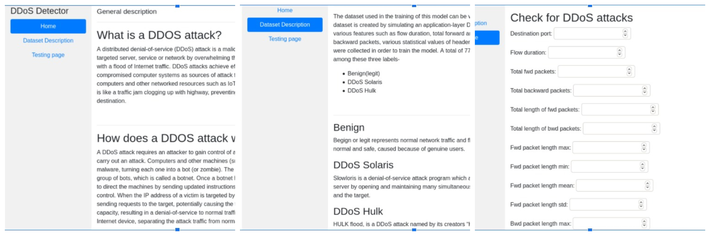

DDoS Detector
Cloud computing technology is in continuous development and with numerous challenges regarding security. In this context, one of the main concerns for cloud computing is represented by the trustworthiness of cloud services. This problem requires prompt resolution because otherwise organizations adopting cloud services would be exposed to increased expenditures while at a greater risk. There are two things that cloud service providers should guarantee all the time: connectivity and availability, and if they are not met, the entire organizations will suffer high costs.
In this project, I have discussed a method for analyzing DDoS attacks using a Machine Learning model so that DDoS attacks are detected in time and appropriate measures can be undertaken. I have built and trained a Decision Tree Classifier that uses network traffic statistics to classify and predict whether the particular traffic was a DDoS attack or normal traffic.
I had also deployed this model to production by building a website which uses this model, and lets the cloud provider know if the traffic was malicious or benign. Cloud providers can then use this to divert the malicious traffic or employ any other protective measures.